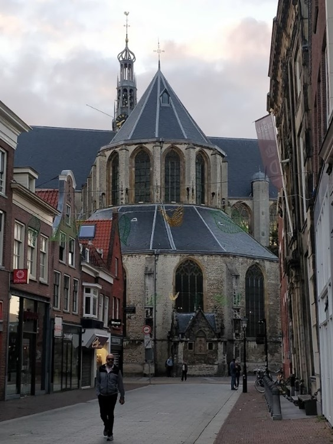

Wandelen in en rondom Alkmaar is top, er is veel te zien waar je ook van houd. Voor de stadsliefhebber is in Alkmaar
veel te zien, van grote kerken en andere historische gebouwen naar oude pakhuizen en grachten die een verhaal vertellen
over de geschiedenis van Alkmaar.
Ook voor de natuurliefhebber stelt Alkmaar niet teleur, even buiten de stad zijn er verschillende
mooie wandelplekken te benemen van bossen en weilanden tot meren en duinen is er voor iedereen wel wat te zien.
Op deze website vertellen wij u wat voor leuke wandelroutes er te beleven zijn en helpen we u Alkmaar te leren kennen.
Hier meer over de geschiedenis van Alkmaar

Middeleeuwen
Alkmaar was origineel een agrarische nederzetting, geplaats rondom de Sint-Laurenskerk die in de 10e eeuw gebouwd is.Alkmaar was geschikt voor landbouw omdat er veel laaggelegen veen- en kleigronden waren, zoals die bij de Mient.
In de Scheteldoekshaven via de Laat vond de meeste handel plaats. In de 13e eeuw breidde Alkmaar zich flink uit
tot een internationale handelsstad, waar regelmatig jaarmarkten georganiseerd werden op deze jaarmarkten waren dus ook internationale kooplieden te vinden.
De vroegmoderne tijd
Tijdens de Tachtigjarige Oorlog werd Alkmaar binnengevallen door de Spanjaarden, echter Alkmaar weerde de aanval van de Spanjaarden driemaal af.Hier komt ook de bekende uitdrukking ‘Bij Alkmaar begint victorie’ ook vandaan. Elk jaar wordt tot op het heden op 8 oktober Alkmaars ontzet gevierd
en in 1876 was er een monument opgericht, het Victoriemonument, in het Victoriepark.
Heden
Tegenwoordig is Alkmaar uitgegroeid tot een stad van meer dan 100.000 inwoners. Oude tradities en feestdagen zoals Alkmaars Ontzet en de kaasmarktbestaan nog steeds en historische gebouwen, monumenten, oude grachten en pakhuizen, de oude stadsmuur en veel meer zijn openbaar toegankelijk om in of rond te wandelen.